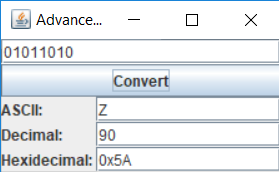

Advanced Binary Converter

Goal:
To learn how computers store numbers.
Steps:
- In module 1 you made a binary to letter converter. Use the starter code in the /extra package of this module to make a binary to letter, decimal, and hexadecimal converter like the one above!
- We humans are used to seeing numbers in decimal, which is base-10, but the computer actually sees them in binary, which is base-2. Base-10 means there are 10 numbers for every digit, 0 to 9. For base-2 there are only 2 numbers, 0 and 1.
- Binary can be hard to work with because it takes so many digits to represent one number. That's why programmers often use hexadecimal, a base-16 number system. There are 16 values for a single digit in hexadecimal. The first 10 numbers are 0 to 9, same as decimal, but the next 6 are A, B, C, D, E, F.
The number 139 in hexadecimal is: 0x8B 8 * (16 ^ 1) + 11 * (16 ^ 0), or 128 + 11 = 139. The '0x' that appears before the number is the coding phrase that indicates the following number is hexadecimal.
The number 139, in base-10, is the sum of 3 digits: 100, 30, and 9.
9 is the 'ones' digit, 3 is the 'tens' digit, and 1 is the 'hundreds' digit.
1 * (10 ^ 2) + 3 * (10 ^ 1) + 9 * (10 ^ 0),
where '^' indicates an exponent.
The number 139 in binary is: 10001011
1 * (2 ^ 7) + 1 * (2 ^ 3) + 1 * (2 ^ 1) + 1 * (2 ^ 0),
or 128 + 8 + 2 + 1 = 139